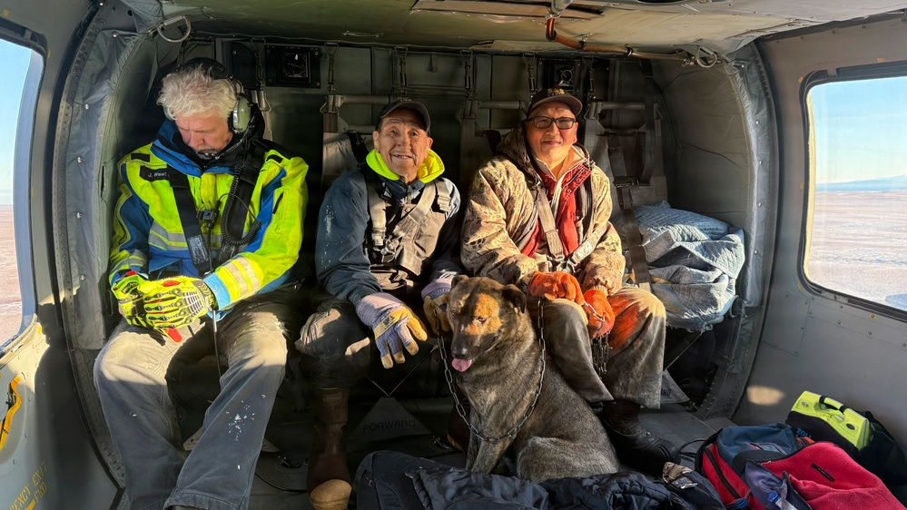

Courtesy photo · DVIDS 9998636 · Public domain · A Nome Volunteer Fire Department emergency medical technician and two rescued boaters ride in a Nome-based Alaska Army National Guard UH-60L Black Hawk during a rescue north of the Arctic Circle, Oct. 6, 2026.
DVIDS
Alaska Guard Black Hawk crew pulls two stranded boaters from north of the Arctic Circle
Alaska Army National Guard aviators with the 1-168th General Support Aviation Battalion rescued two overdue boaters on Oct. 6 whose vessel was stuck in icy water about 7 miles north of the Arctic Circle. The Alaska Rescue Coordination Center opened the mission after a request from the Alaska State Troopers. A Nome-based UH-60L Black Hawk, with two Nome Volunteer Fire Department emergency medical technicians aboard, found the pair and their dog at a cabin about 75 miles east of Kotzebue, landed on the tundra, and flew them to Kotzebue, where they were released to the Troopers. Capt. Jared Scheler, one of the pilots, said the crew brought the medics because the ages and condition of the two people were unknown.
DVIDS · Read source →